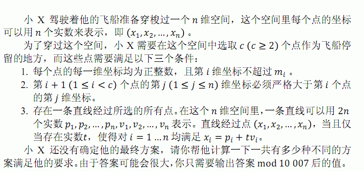

第一行包含一个正整数T，表示有T组数据求解 每组数据包含两行，第一行包含两个正整数N,C(c>=2),分别表示空间的 维数和需要选择的暂停点个数 第二行包含N个正整数，依次表示M1,M2....Mn
有T行，每行一个非负整数，依次对应每组数据的答案。
3 2 3 3 4 3 3 3 4 4 4 4 5 9 7 8
2 4 846
样例数据第一组共有两种可行方案：一种是选择（1,1），（ 2,2） ,（ 3,3） ，另一种是选择 （ 1,2） ,（ 2,3） ,（ 3,4） 。
T<=1000,N<=11,C<=20,Mi<=100000